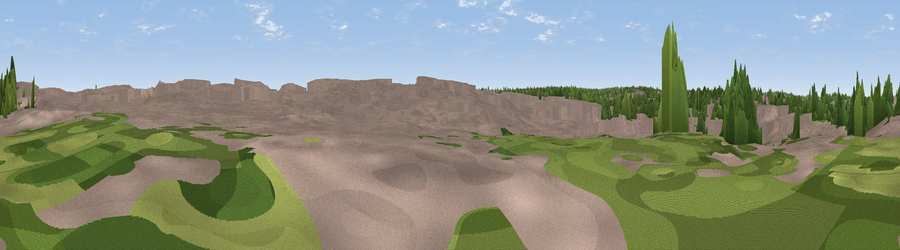

Viewpoint near Birmingham
#46322 in England · top 99% of its area beats it · near BirminghamThe view, rendered

A 360° render of this exact spot computed from the terrain model, tree cover and land cover — summer colours, afternoon light, calibrated against photographs of famous viewpoints. Real trees, hedges and buildings will differ in detail.
The panorama
Grey silhouette: terrain skyline in each direction (720 bearings, Earth curvature and refraction included). Dashed green: skyline with trees (+15 m) and buildings (+8 m) as obstacles. Blue strip: how far the ground is visible on each bearing.
Where the view opens
Wedge length = distance to the farthest visible ground on that bearing (vegetation-aware). Rings at 10, 25 and 50 km.
What fills the view
65% built-up · 31% woodland · 4% grassland
Angular shares of the visible panorama (visual magnitude), not map area. Landscape diversity 0.34 (0–1 Shannon).
Key numbers
More beautiful places nearby
The staircase of upgrades: each row has a higher view potential than everything closer. Driving times are estimates from straight-line distance, calibrated against real road routing — check an actual route before setting out.
| Place | Direction | Drive | Score |
|---|---|---|---|
| Viewpoint near Great Barr | N · 5 km | ~11 min | 13.1 |
| Lightwoods Hill | WSW · 5 km | ~12 min | 49.9 |
| Viewpoint near Great Barr | N · 9 km | ~17 min | 51.1 |
| Viewpoint near Oakham | W · 9 km | ~18 min | 68.8 |
| Viewpoint near Streetly | N · 10 km | ~19 min | 69.5 |
| Windmill Hill | SW · 13 km | ~24 min | 73.2 |
| Viewpoint near Clent | WSW · 14 km | ~26 min | 73.8 |
| Viewpoint near Clent | WSW · 15 km | ~27 min | 74.3 |
52.48847, -1.91415 · source: osm viewpoint · position refined by local search. Computed location — check access rights before visiting.